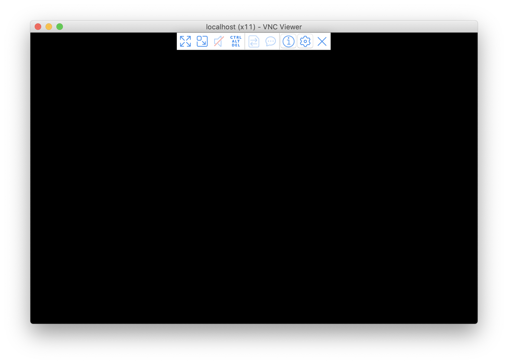
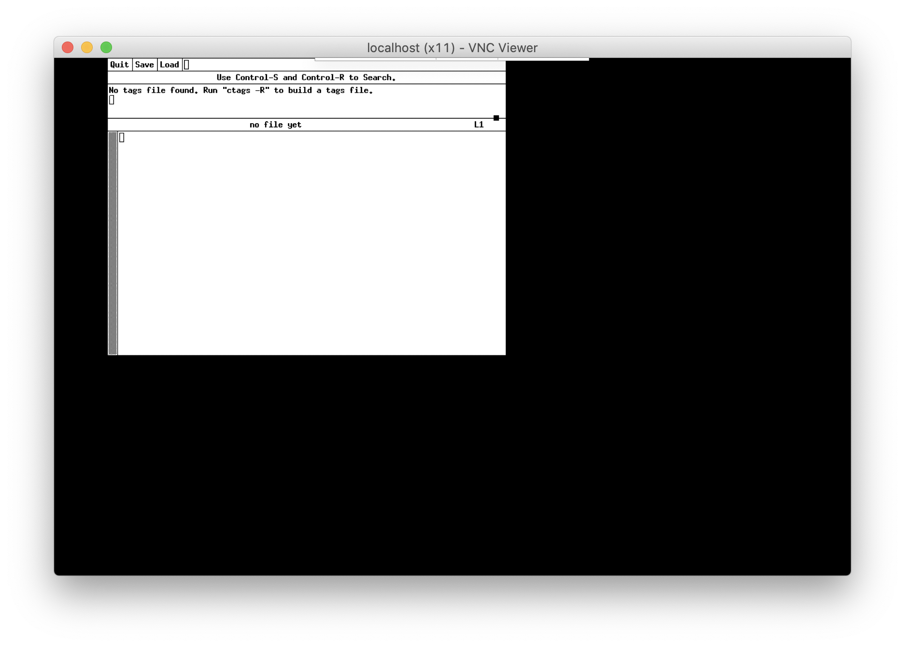
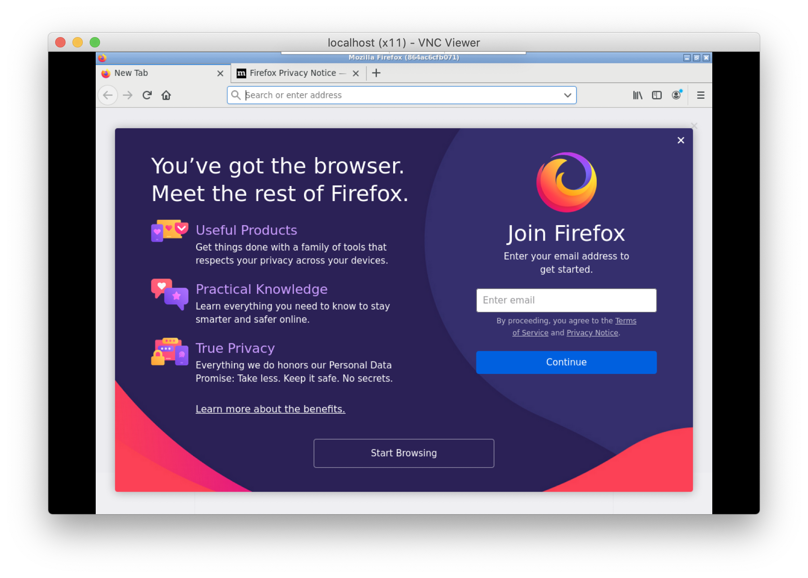

abcdesktop.io from scratch
The goal of this chapter is to learn how abcdesktop.io works. You should not repeat the process in production, but prefer use a Dockerfile and the docker build command.
Requirements
- A running dockerd last version
- A VNC Client
- An access to the docker public registry
- An access to the ubuntu repository
Create a shared volume myshared
Before creating containers, we need a shared volume, to share data and unix socket between containers. Run the docker volume create command.
docker volume create myshared
Start the first container myx11server
Start the first graphical container named myx11server, forward the tcp port 5900 to the container.
- The tcp port 5900 will be use later by the vnc server.
- The volume myshared is mounted to /tmp
docker run -it -v myshared:/tmp --name myx11server -p 5900:5900 ubuntu:latest bash
You should see a prompt like :
root@6de36e574877:/#
Install the X11 graphics server tigervnc
apt-get update
apt-get install -y tigervnc-standalone-server tigervnc-xorg-extension
Start the X11 graphics server tigervnc
Xvnc :0 -SecurityTypes=none &
You should read the output
Xvnc TigerVNC 1.7.0 - built Dec 5 2017 09:25:01
Copyright (C) 1999-2016 TigerVNC Team and many others (see README.txt)
See http://www.tigervnc.org for information on TigerVNC.
Underlying X server release 11905000, The X.Org Foundation
Mon Mar 2 11:43:56 2020
vncext: VNC extension running!
vncext: Listening for VNC connections on all interface(s), port 5900
vncext: created VNC server for screen 0
Great, you have installed an X11 server inside a docker container, and the Xvnc server is listening for VNC connections on the tcp port 5900. Keep this container running.
We will use the host tcp port 5900 to connect VNC Client.
Use VNC client to connect to your first container myx11server
From your host or from another host, install a VNC client. You can use your prefered VNC Client for your operating system or the RealVNC's VNC Viewer. You can download the RealVNC's VNC Client, by following the link https://www.realvnc.com/fr/connect/download/viewer/
Run the VNC Viewer, and set the hostname where the container myx11server is running. In the following example.
Here I am using VNC Viewer on Mac OS/X and I did set the hostname to localhost.
This is a getting started guide to understand how abcdesktop works, so we did not set a password to protect the VNC access.
This is not the best practices guide for production installations.
As we did not set a password to protect the VNC access, you have to confirm the uncrypted connection warning dialog box and then press the Continue button.
This is just an example to understand how abcdesktop works, so we did not set a password to protect the VNC access.
You need to confirm the uncrypted connection warning dialog box. Press the Continue button.
A black screen should appear :

Keep this VNC Client running, we will use this display to show our applications later.
Install an x11 application as a docker application
On your host, where your container myx11server is running. Open a new shell window and start a new docker container named myapp. The myapp container access to the volume myshared and mount it to /tmp.
docker run -it -v myshared:/tmp --name myapp ubuntu:latest
You should see a prompt like :
root@96df62a73e4f:/#
To install standart application like xedit, xman or xeyes, install the package x11-apps.
Run those commands in your myx11server container.
apt-get update
apt-get install -y x11-apps
Set the DISPLAY environment variable to :0.0 and then start the xedit command.
export DISPLAY=:0.0
xedit
On the VNC Viewer, the application xedit should appear.

Great, you can run a X11 application inside a dedicated docker container, and use your myx11server as DISPLAY. But you can't move, resize or close the xedit window.
Install the windows manager openbox on your myx11server container
To move, resize, close, the windows applications, we need a windows manager. abcdesktop use the windows manager openbox. OpenBox is a lightweight, powerful, and highly configurable stacking window manager with extensive standards support.
Run the install openbox command in your myx11server container.
apt-get install -y openbox
Set the DISPLAY environment variable to :0.0 and then start openbox.
export DISPLAY=:0.0
openbox
The Openbox message appear to the sdterr
Openbox-Message: Unable to find a valid menu file "/var/lib/openbox/debian-menu.xml"
Now, you can move the window xedit. The windows are decorated.
Remove the myapp container
Activate the window shell with your myapp running container, and press CTRL+C
root@9abc7da524a5:/# xedit
^C
root@9abc7da524a5:/# exit
exit
You can remove your docker container, to clean up your environment
docker rm myapp
Install another x11 application as a docker application
On your host, where your container myx11server is running, open a new shell window and start a new docker container named myapp.
docker run -it -v myshared:/tmp --name myfirefox ubuntu:latest
You should see a prompt like :
root@96df62a73e4f:/#
To install firefox application, run the install firefox command in your myfirefox container.
apt-get update
apt-get install -y firefox
Run the firefox command
export DISPLAY=:0.0
firefox
You should read the output
(firefox:1831): LIBDBUSMENU-GLIB-WARNING **: 14:42:14.737: Unable to get session bus: Failed to execute child process ?dbus-launch? (No such file or directory)
On the VNC Viewer, the application firefox should appear.

Check that firefox works and go to your favorite web site.
Clean your setup
To clean your work space, stop the running containers myapp myfirefox myx11server, then remove them. We also need to remove the shared volume myshared
Run the commands :
docker stop myfirefox myx11server
docker rm myfirefox myx11server
docker volume rm myshared
Keep the docker images ubuntu, we will use it in the next chapter
Next chapter
In the next chapter, we will replace the VNC Client by a web browser.